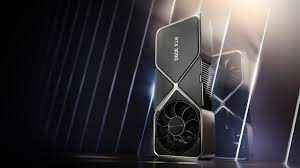

Componentes de una computadora:
¿Que es la tarjeta grafica?
Una tarjeta gráfica es una tarjeta de expansión de la placa base del ordenador que se encarga de procesar los datos provenientes de la unidad central de procesamiento (CPU) y transformarlos en información comprensible y representable en el dispositivo de salida (por ejemplo: monitor, televisor o proyector). Estas tarjetas utilizan una unidad de procesamiento gráfico o GPU, que muchas veces se usa erróneamente para referirse a la tarjeta gráfica en sí.
También se le conoce como:
* Adaptador de pantalla
* Adaptador de vídeo
* Placa de vídeo
* Tarjeta aceleradora de gráficos
* Tarjeta de vídeo/video
Algunas tarjetas gráficas han ofrecido funcionalidades añadidas como sintonización de televisión, captura de vídeo, decodificación2 MPEG-2 y MPEG-4, o incluso conectores IEEE 1394 (Firewire), de mouse, lápiz óptico o joystick.
Las tarjetas gráficas más comunes son las disponibles para el ordenador compatibles con la IBM PC, debido a la enorme popularidad de estas, pero otras arquitecturas también hacen uso de este tipo de dispositivos.
Las tarjetas gráficas no son dominio exclusivo de los ordenadores personales (PC) compatibles IBM; contaron o cuentan con ellas dispositivos como por ejemplo: Commodore Amiga (conectadas mediante las ranuras Zorro II y Zorro III), Apple II, Apple Macintosh, Spectravideo SVI-328, equipos MSX y en las videoconsolas modernas, como la Nintendo Switch, la PlayStation 4 y la Xbox One.

¿Como se realiza la correcta instalacion?
La instalación de una tarjeta gráfica es un proceso sencillo que requiere tres cosas: una nueva tarjeta gráfica, el equipo y un destornillador Phillips. Antes de comenzar asegúrate de apagar la computadora y desconéctarla de la corriente eléctrica.
Comienza por quitar el lateral de la carcasa, a continuación, busca y retira la tarjeta gráfica que quieres reemplazar. No obstante, algunos equipos no tienen una tarjeta gráfica instalada. En su lugar, es necesario localizar la ranura PCI-E x16 más cerca del disipador de calor del procesador. Esta será la primera o la segunda ranura de expansión en la placa base.
La instalación de una tarjeta gráfica es un proceso sencillo que requiere tres cosas: una nueva tarjeta gráfica, el equipo y un destornillador Phillips. Antes de comenzar asegúrate de apagar la computadora y desconéctarla de la corriente eléctrica.
Comienza por quitar el lateral de la carcasa, a continuación, busca y retira la tarjeta gráfica que quieres reemplazar. No obstante, algunos equipos no tienen una tarjeta gráfica instalada. En su lugar, es necesario localizar la ranura PCI-E x16 más cerca del disipador de calor del procesador. Esta será la primera o la segunda ranura de expansión en la placa base.
Ahora puedes instalar su nueva tarjeta gráfica en la ranura PCI-E x16 abiertas y despejadas. Inserta firmemente la tarjeta en la ranura y empuja hacia abajo el bloqueo de plástico en el extremo de la ranura PCI-E para mantenerlo en su lugar. A continuación, utilice un tornillo para asegurar soporte de retención de metal de la tarjeta gráfica para el caso de su PC. Puedes volver a utilizar el mismo tornillo(s) que contenía el soporte de la cubierta o de la tarjeta gráfica anterior en su lugar.
La mayoría de las tarjetas gráficas diseñadas para juegos requieren conectores de alimentación adicionales. Si los tienes, asegúrate de conectar los cables de alimentación PCI-E. Tu tarjeta gráfica no funcionará correctamente sin una alimentación suministrado correctamente. De hecho, si no conectas los cables de alimentación PCI-E de tu PC la tarjeta gráfica no arancará.